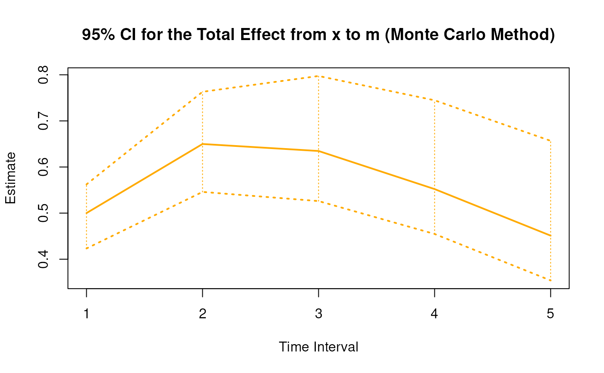
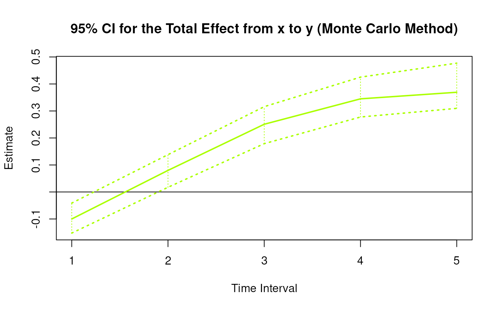
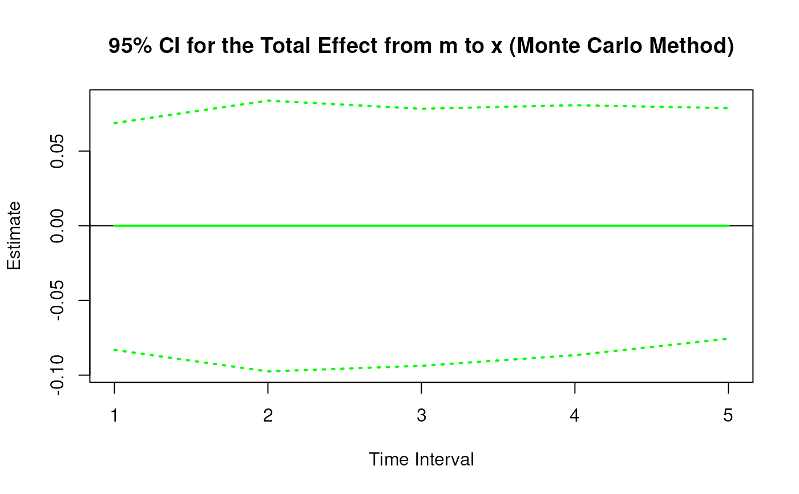
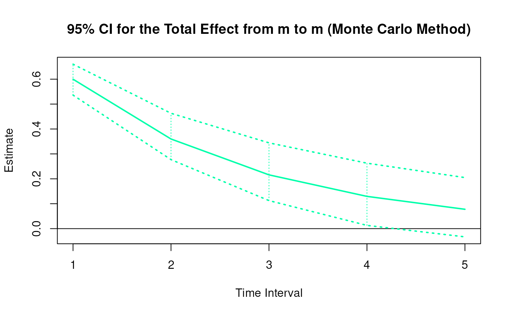
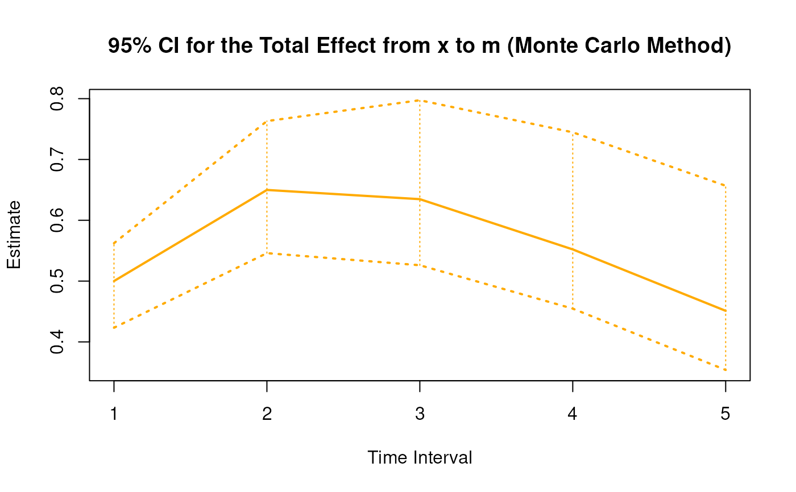
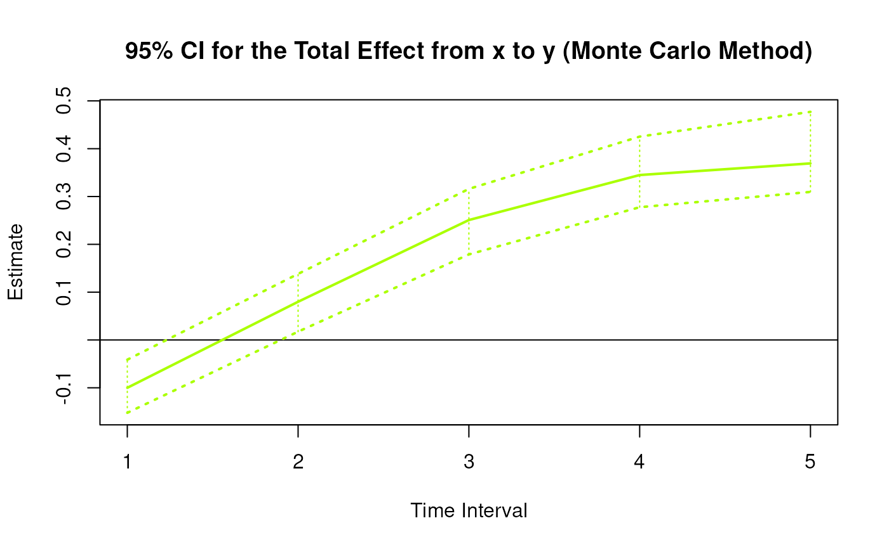
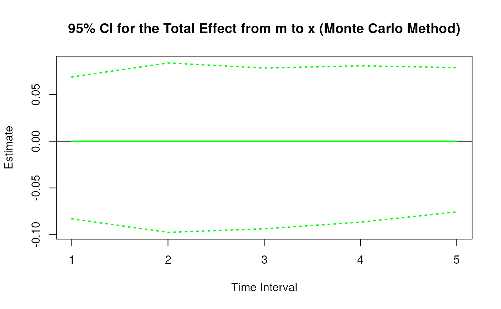
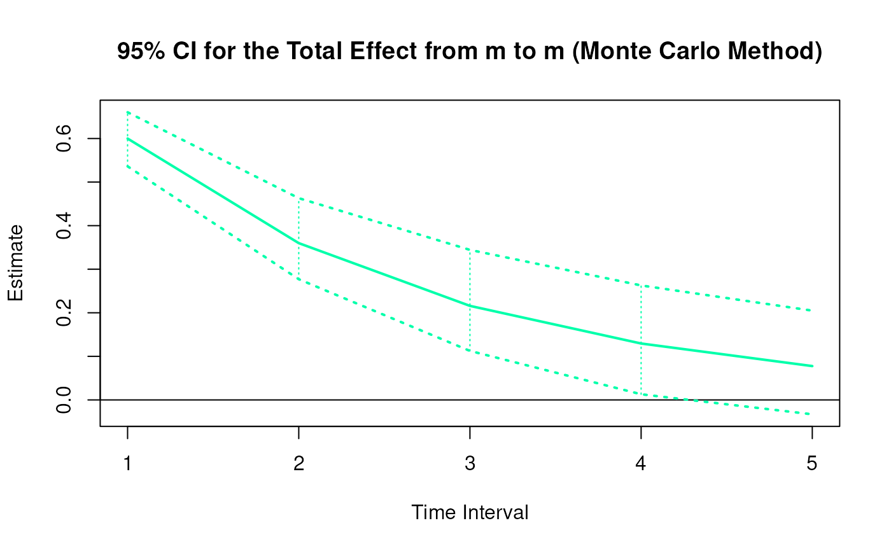
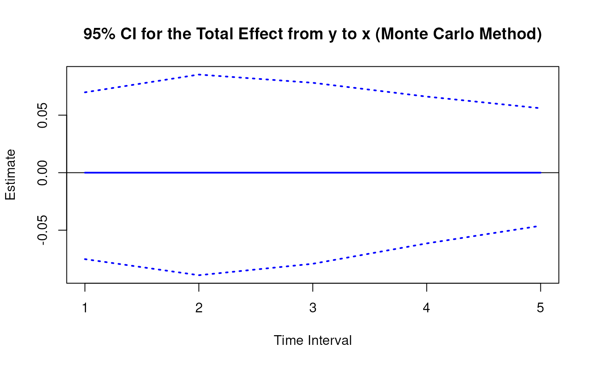
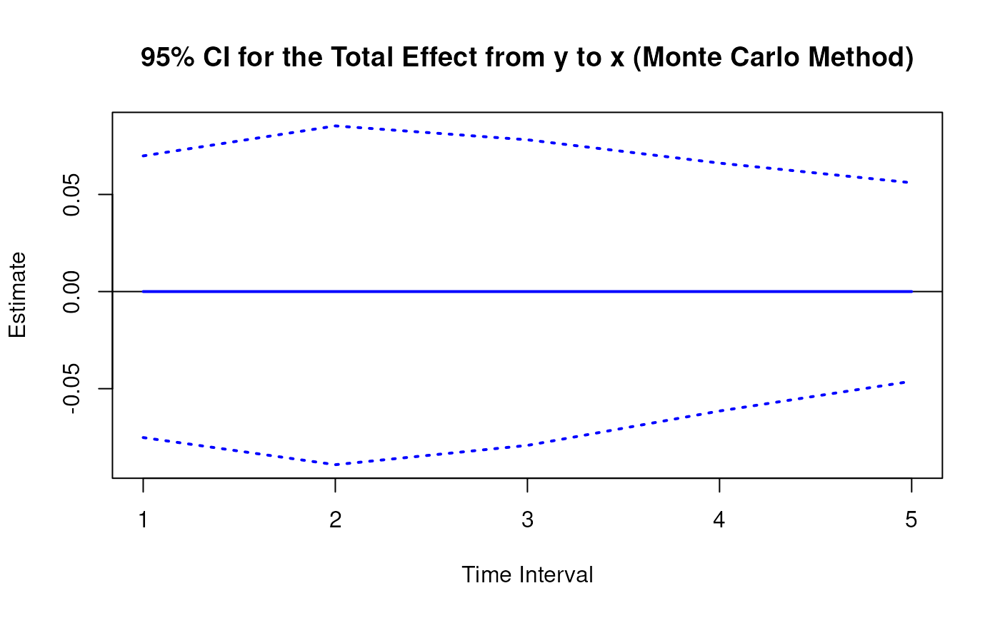

Monte Carlo Sampling Distribution for the Elements of the Matrix of Lagged Coefficients Over a Specific Time Interval or a Range of Time Intervals
Source:R/cTMed-mc-beta.R
MCBeta.RdThis function generates a Monte Carlo method sampling distribution for the elements of the matrix of lagged coefficients \(\boldsymbol{\beta}\) over a specific time interval \(\Delta t\) or a range of time intervals using the first-order stochastic differential equation model drift matrix \(\boldsymbol{\Phi}\).
Usage
MCBeta(
phi,
vcov_phi_vec,
delta_t,
R,
test_phi = TRUE,
ncores = NULL,
seed = NULL,
tol = 0.01
)Arguments
- phi
Numeric matrix. The drift matrix (\(\boldsymbol{\Phi}\)).
phishould have row and column names pertaining to the variables in the system.- vcov_phi_vec
Numeric matrix. The sampling variance-covariance matrix of \(\mathrm{vec} \left( \boldsymbol{\Phi} \right)\).
- delta_t
Numeric. Time interval (\(\Delta t\)).
- R
Positive integer. Number of replications.
- test_phi
Logical. If
test_phi = TRUE, the function tests the stability of the generated drift matrix \(\boldsymbol{\Phi}\). If the test returnsFALSE, the function generates a new drift matrix \(\boldsymbol{\Phi}\) and runs the test recursively until the test returnsTRUE.- ncores
Positive integer. Number of cores to use. If
ncores = NULL, use a single core. Consider using multiple cores when number of replicationsRis a large value.- seed
Random seed.
- tol
Numeric. Smallest possible time interval to allow.
Value
Returns an object
of class ctmedmc which is a list with the following elements:
- call
Function call.
- args
Function arguments.
- fun
Function used ("MCBeta").
- output
A list the length of which is equal to the length of
delta_t.
Each element in the output list has the following elements:
- est
Estimated elements of the matrix of lagged coefficients.
- thetahatstar
A matrix of Monte Carlo elements of the matrix of lagged coefficients.
Details
See Total().
Monte Carlo Method
Let \(\boldsymbol{\theta}\) be \(\mathrm{vec} \left( \boldsymbol{\Phi} \right)\), that is, the elements of the \(\boldsymbol{\Phi}\) matrix in vector form sorted column-wise. Let \(\hat{\boldsymbol{\theta}}\) be \(\mathrm{vec} \left( \hat{\boldsymbol{\Phi}} \right)\). Based on the asymptotic properties of maximum likelihood estimators, we can assume that estimators are normally distributed around the population parameters. $$ \hat{\boldsymbol{\theta}} \sim \mathcal{N} \left( \boldsymbol{\theta}, \mathbb{V} \left( \hat{\boldsymbol{\theta}} \right) \right) $$ Using this distributional assumption, a sampling distribution of \(\hat{\boldsymbol{\theta}}\) which we refer to as \(\hat{\boldsymbol{\theta}}^{\ast}\) can be generated by replacing the population parameters with sample estimates, that is, $$ \hat{\boldsymbol{\theta}}^{\ast} \sim \mathcal{N} \left( \hat{\boldsymbol{\theta}}, \hat{\mathbb{V}} \left( \hat{\boldsymbol{\theta}} \right) \right) . $$ Let \(\mathbf{g} \left( \hat{\boldsymbol{\theta}} \right)\) be a parameter that is a function of the estimated parameters. A sampling distribution of \(\mathbf{g} \left( \hat{\boldsymbol{\theta}} \right)\) , which we refer to as \(\mathbf{g} \left( \hat{\boldsymbol{\theta}}^{\ast} \right)\) , can be generated by using the simulated estimates to calculate \(\mathbf{g}\). The standard deviations of the simulated estimates are the standard errors. Percentiles corresponding to \(100 \left( 1 - \alpha \right) \%\) are the confidence intervals.
References
Bollen, K. A. (1987). Total, direct, and indirect effects in structural equation models. Sociological Methodology, 17, 37. doi:10.2307/271028
Deboeck, P. R., & Preacher, K. J. (2015). No need to be discrete: A method for continuous time mediation analysis. Structural Equation Modeling: A Multidisciplinary Journal, 23 (1), 61–75. doi:10.1080/10705511.2014.973960
Ryan, O., & Hamaker, E. L. (2021). Time to intervene: A continuous-time approach to network analysis and centrality. Psychometrika, 87 (1), 214–252. doi:10.1007/s11336-021-09767-0
See also
Other Continuous Time Mediation Functions:
BootBeta(),
BootBetaStd(),
BootMed(),
BootMedStd(),
DeltaBeta(),
DeltaBetaStd(),
DeltaIndirectCentral(),
DeltaMed(),
DeltaMedStd(),
DeltaTotalCentral(),
Direct(),
DirectStd(),
ExpCov(),
ExpMean(),
Indirect(),
IndirectCentral(),
IndirectStd(),
MCBetaStd(),
MCIndirectCentral(),
MCMed(),
MCMedStd(),
MCPhi(),
MCTotalCentral(),
Med(),
MedStd(),
PosteriorBeta(),
PosteriorIndirectCentral(),
PosteriorMed(),
PosteriorTotalCentral(),
Total(),
TotalCentral(),
TotalStd(),
Trajectory()
Examples
set.seed(42)
phi <- matrix(
data = c(
-0.357, 0.771, -0.450,
0.0, -0.511, 0.729,
0, 0, -0.693
),
nrow = 3
)
colnames(phi) <- rownames(phi) <- c("x", "m", "y")
vcov_phi_vec <- matrix(
data = c(
0.00843, 0.00040, -0.00151,
-0.00600, -0.00033, 0.00110,
0.00324, 0.00020, -0.00061,
0.00040, 0.00374, 0.00016,
-0.00022, -0.00273, -0.00016,
0.00009, 0.00150, 0.00012,
-0.00151, 0.00016, 0.00389,
0.00103, -0.00007, -0.00283,
-0.00050, 0.00000, 0.00156,
-0.00600, -0.00022, 0.00103,
0.00644, 0.00031, -0.00119,
-0.00374, -0.00021, 0.00070,
-0.00033, -0.00273, -0.00007,
0.00031, 0.00287, 0.00013,
-0.00014, -0.00170, -0.00012,
0.00110, -0.00016, -0.00283,
-0.00119, 0.00013, 0.00297,
0.00063, -0.00004, -0.00177,
0.00324, 0.00009, -0.00050,
-0.00374, -0.00014, 0.00063,
0.00495, 0.00024, -0.00093,
0.00020, 0.00150, 0.00000,
-0.00021, -0.00170, -0.00004,
0.00024, 0.00214, 0.00012,
-0.00061, 0.00012, 0.00156,
0.00070, -0.00012, -0.00177,
-0.00093, 0.00012, 0.00223
),
nrow = 9
)
# Specific time interval ----------------------------------------------------
MCBeta(
phi = phi,
vcov_phi_vec = vcov_phi_vec,
delta_t = 1,
R = 100L # use a large value for R in actual research
)
#>
#> Total, Direct, and Indirect Effects
#>
#> $`1`
#> interval est se R 2.5% 97.5%
#> from x to x 1 0.6998 0.0395 100 0.6123 0.7653
#> from x to m 1 0.5000 0.0342 100 0.4372 0.5625
#> from x to y 1 -0.1000 0.0349 100 -0.1728 -0.0344
#> from m to x 1 0.0000 0.0443 100 -0.0815 0.0965
#> from m to m 1 0.5999 0.0341 100 0.5311 0.6641
#> from m to y 1 0.3998 0.0318 100 0.3332 0.4560
#> from y to x 1 0.0000 0.0441 100 -0.0972 0.0852
#> from y to m 1 0.0000 0.0310 100 -0.0565 0.0632
#> from y to y 1 0.5001 0.0309 100 0.4406 0.5652
#>
# Range of time intervals ---------------------------------------------------
mc <- MCBeta(
phi = phi,
vcov_phi_vec = vcov_phi_vec,
delta_t = 1:5,
R = 100L # use a large value for R in actual research
)
plot(mc)


 # Methods -------------------------------------------------------------------
# MCBeta has a number of methods including
# print, summary, confint, and plot
print(mc)
#>
#> Total, Direct, and Indirect Effects
#>
#> $`1`
#> interval est se R 2.5% 97.5%
#> from x to x 1 0.6998 0.0479 100 0.6217 0.7987
#> from x to m 1 0.5000 0.0372 100 0.4233 0.5623
#> from x to y 1 -0.1000 0.0283 100 -0.1523 -0.0412
#> from m to x 1 0.0000 0.0399 100 -0.0831 0.0687
#> from m to m 1 0.5999 0.0333 100 0.5361 0.6602
#> from m to y 1 0.3998 0.0258 100 0.3490 0.4411
#> from y to x 1 0.0000 0.0371 100 -0.0752 0.0699
#> from y to m 1 0.0000 0.0323 100 -0.0475 0.0713
#> from y to y 1 0.5001 0.0241 100 0.4652 0.5530
#>
#> $`2`
#> interval est se R 2.5% 97.5%
#> from x to x 2 0.4897 0.0574 100 0.4116 0.6226
#> from x to m 2 0.6499 0.0578 100 0.5460 0.7631
#> from x to y 2 0.0799 0.0318 100 0.0173 0.1382
#> from m to x 2 0.0000 0.0489 100 -0.0975 0.0837
#> from m to m 2 0.3599 0.0497 100 0.2771 0.4631
#> from m to y 2 0.4398 0.0289 100 0.3813 0.4882
#> from y to x 2 0.0000 0.0445 100 -0.0891 0.0853
#> from y to m 2 0.0000 0.0493 100 -0.0908 0.0957
#> from y to y 2 0.2501 0.0293 100 0.2080 0.3112
#>
#> $`3`
#> interval est se R 2.5% 97.5%
#> from x to x 3 0.3427 0.0579 100 0.2710 0.4796
#> from x to m 3 0.6347 0.0709 100 0.5261 0.7974
#> from x to y 3 0.2508 0.0341 100 0.1789 0.3160
#> from m to x 3 0.0000 0.0489 100 -0.0937 0.0783
#> from m to m 3 0.2159 0.0601 100 0.1125 0.3444
#> from m to y 3 0.3638 0.0295 100 0.3080 0.4138
#> from y to x 3 0.0000 0.0407 100 -0.0792 0.0781
#> from y to m 3 0.0000 0.0569 100 -0.1086 0.1075
#> from y to y 3 0.1251 0.0302 100 0.0864 0.1967
#>
#> $`4`
#> interval est se R 2.5% 97.5%
#> from x to x 4 0.2398 0.0572 100 0.1666 0.3709
#> from x to m 4 0.5521 0.0782 100 0.4547 0.7447
#> from x to y 4 0.3449 0.0396 100 0.2776 0.4253
#> from m to x 4 0.0000 0.0455 100 -0.0866 0.0807
#> from m to m 4 0.1295 0.0655 100 0.0130 0.2628
#> from m to y 4 0.2683 0.0329 100 0.2090 0.3389
#> from y to x 4 0.0000 0.0337 100 -0.0615 0.0661
#> from y to m 4 0.0000 0.0572 100 -0.1087 0.1105
#> from y to y 4 0.0625 0.0325 100 0.0135 0.1351
#>
#> $`5`
#> interval est se R 2.5% 97.5%
#> from x to x 5 0.1678 0.0568 100 0.0867 0.3132
#> from x to m 5 0.4511 0.0819 100 0.3539 0.6567
#> from x to y 5 0.3693 0.0454 100 0.3097 0.4771
#> from m to x 5 0.0000 0.0403 100 -0.0756 0.0787
#> from m to m 5 0.0777 0.0662 100 -0.0330 0.2049
#> from m to y 5 0.1859 0.0373 100 0.1250 0.2679
#> from y to x 5 0.0000 0.0268 100 -0.0462 0.0560
#> from y to m 5 0.0000 0.0528 100 -0.0974 0.1060
#> from y to y 5 0.0313 0.0350 100 -0.0252 0.0971
#>
summary(mc)
#> effect interval est se R 2.5% 97.5%
#> 1 from x to x 1 0.69977250 0.04786675 100 0.62172403 0.79874753
#> 2 from x to m 1 0.50003412 0.03718497 100 0.42325918 0.56229947
#> 3 from x to y 1 -0.10003837 0.02828969 100 -0.15232781 -0.04123191
#> 4 from m to x 1 0.00000000 0.03992663 100 -0.08309181 0.06870048
#> 5 from m to m 1 0.59989538 0.03326623 100 0.53611751 0.66024544
#> 6 from m to y 1 0.39983562 0.02577353 100 0.34904206 0.44107580
#> 7 from y to x 1 0.00000000 0.03707496 100 -0.07516818 0.06985211
#> 8 from y to m 1 0.00000000 0.03234207 100 -0.04753145 0.07133458
#> 9 from y to y 1 0.50007360 0.02411597 100 0.46515192 0.55299508
#> 10 from x to x 2 0.48968155 0.05741102 100 0.41161279 0.62262364
#> 11 from x to m 2 0.64987829 0.05776830 100 0.54595994 0.76312096
#> 12 from x to y 2 0.07990080 0.03177536 100 0.01734713 0.13816481
#> 13 from m to x 2 0.00000000 0.04893166 100 -0.09753023 0.08374131
#> 14 from m to m 2 0.35987447 0.04965256 100 0.27706960 0.46307954
#> 15 from m to y 2 0.43980678 0.02885193 100 0.38132743 0.48822358
#> 16 from y to x 2 0.00000000 0.04445760 100 -0.08913858 0.08529630
#> 17 from y to m 2 0.00000000 0.04933942 100 -0.09080343 0.09573818
#> 18 from y to y 2 0.25007360 0.02932592 100 0.20802246 0.31124751
#> 19 from x to x 3 0.34266568 0.05791955 100 0.27099116 0.47958487
#> 20 from x to m 3 0.63471647 0.07093977 100 0.52606339 0.79739417
#> 21 from x to y 3 0.25081383 0.03411898 100 0.17891544 0.31595326
#> 22 from m to x 3 0.00000000 0.04893190 100 -0.09374183 0.07830556
#> 23 from m to m 3 0.21588703 0.06011584 100 0.11251361 0.34437473
#> 24 from m to y 3 0.36382639 0.02947249 100 0.30801023 0.41379039
#> 25 from y to x 3 0.00000000 0.04071142 100 -0.07920504 0.07814819
#> 26 from y to m 3 0.00000000 0.05688617 100 -0.10862134 0.10752526
#> 27 from y to y 3 0.12505520 0.03022152 100 0.08639794 0.19667600
#> 28 from x to x 4 0.23978802 0.05722555 100 0.16662023 0.37091634
#> 29 from x to m 4 0.55210801 0.07815629 100 0.45470526 0.74465355
#> 30 from x to y 4 0.34492791 0.03955381 100 0.27762014 0.42528849
#> 31 from m to x 4 0.00000000 0.04549307 100 -0.08664498 0.08069059
#> 32 from m to m 4 0.12950963 0.06546897 100 0.01300602 0.26278517
#> 33 from m to y 4 0.26825930 0.03286230 100 0.20901912 0.33888337
#> 34 from y to x 4 0.00000000 0.03374871 100 -0.06149070 0.06614243
#> 35 from y to m 4 0.00000000 0.05716699 100 -0.10867847 0.11051060
#> 36 from y to y 4 0.06253681 0.03251678 100 0.01346188 0.13508616
#> 37 from x to x 5 0.16779706 0.05678611 100 0.08673995 0.31323136
#> 38 from x to m 5 0.45110924 0.08186486 100 0.35387853 0.65674061
#> 39 from x to y 5 0.36925379 0.04543535 100 0.30966378 0.47707320
#> 40 from m to x 5 0.00000000 0.04033134 100 -0.07559840 0.07873901
#> 41 from m to m 5 0.07769223 0.06621431 100 -0.03300829 0.20494763
#> 42 from m to y 5 0.18593196 0.03730317 100 0.12500037 0.26786178
#> 43 from y to x 5 0.00000000 0.02675113 100 -0.04617549 0.05602058
#> 44 from y to m 5 0.00000000 0.05283551 100 -0.09741901 0.10601744
#> 45 from y to y 5 0.03127301 0.03497054 100 -0.02520207 0.09709249
confint(mc, level = 0.95)
#> effect interval 2.5 % 97.5 %
#> 1 from x to x 1 0.62172403 0.79874753
#> 2 from x to m 1 0.42325918 0.56229947
#> 3 from x to y 1 -0.15232781 -0.04123191
#> 4 from x to x 2 0.41161279 0.62262364
#> 5 from x to m 2 0.54595994 0.76312096
#> 6 from x to y 2 0.01734713 0.13816481
#> 7 from x to x 3 0.27099116 0.47958487
#> 8 from x to m 3 0.52606339 0.79739417
#> 9 from x to y 3 0.17891544 0.31595326
#> 10 from x to x 4 0.16662023 0.37091634
#> 11 from x to m 4 0.45470526 0.74465355
#> 12 from x to y 4 0.27762014 0.42528849
#> 13 from x to x 5 0.08673995 0.31323136
#> 14 from x to m 5 0.35387853 0.65674061
#> 15 from x to y 5 0.30966378 0.47707320
plot(mc)
# Methods -------------------------------------------------------------------
# MCBeta has a number of methods including
# print, summary, confint, and plot
print(mc)
#>
#> Total, Direct, and Indirect Effects
#>
#> $`1`
#> interval est se R 2.5% 97.5%
#> from x to x 1 0.6998 0.0479 100 0.6217 0.7987
#> from x to m 1 0.5000 0.0372 100 0.4233 0.5623
#> from x to y 1 -0.1000 0.0283 100 -0.1523 -0.0412
#> from m to x 1 0.0000 0.0399 100 -0.0831 0.0687
#> from m to m 1 0.5999 0.0333 100 0.5361 0.6602
#> from m to y 1 0.3998 0.0258 100 0.3490 0.4411
#> from y to x 1 0.0000 0.0371 100 -0.0752 0.0699
#> from y to m 1 0.0000 0.0323 100 -0.0475 0.0713
#> from y to y 1 0.5001 0.0241 100 0.4652 0.5530
#>
#> $`2`
#> interval est se R 2.5% 97.5%
#> from x to x 2 0.4897 0.0574 100 0.4116 0.6226
#> from x to m 2 0.6499 0.0578 100 0.5460 0.7631
#> from x to y 2 0.0799 0.0318 100 0.0173 0.1382
#> from m to x 2 0.0000 0.0489 100 -0.0975 0.0837
#> from m to m 2 0.3599 0.0497 100 0.2771 0.4631
#> from m to y 2 0.4398 0.0289 100 0.3813 0.4882
#> from y to x 2 0.0000 0.0445 100 -0.0891 0.0853
#> from y to m 2 0.0000 0.0493 100 -0.0908 0.0957
#> from y to y 2 0.2501 0.0293 100 0.2080 0.3112
#>
#> $`3`
#> interval est se R 2.5% 97.5%
#> from x to x 3 0.3427 0.0579 100 0.2710 0.4796
#> from x to m 3 0.6347 0.0709 100 0.5261 0.7974
#> from x to y 3 0.2508 0.0341 100 0.1789 0.3160
#> from m to x 3 0.0000 0.0489 100 -0.0937 0.0783
#> from m to m 3 0.2159 0.0601 100 0.1125 0.3444
#> from m to y 3 0.3638 0.0295 100 0.3080 0.4138
#> from y to x 3 0.0000 0.0407 100 -0.0792 0.0781
#> from y to m 3 0.0000 0.0569 100 -0.1086 0.1075
#> from y to y 3 0.1251 0.0302 100 0.0864 0.1967
#>
#> $`4`
#> interval est se R 2.5% 97.5%
#> from x to x 4 0.2398 0.0572 100 0.1666 0.3709
#> from x to m 4 0.5521 0.0782 100 0.4547 0.7447
#> from x to y 4 0.3449 0.0396 100 0.2776 0.4253
#> from m to x 4 0.0000 0.0455 100 -0.0866 0.0807
#> from m to m 4 0.1295 0.0655 100 0.0130 0.2628
#> from m to y 4 0.2683 0.0329 100 0.2090 0.3389
#> from y to x 4 0.0000 0.0337 100 -0.0615 0.0661
#> from y to m 4 0.0000 0.0572 100 -0.1087 0.1105
#> from y to y 4 0.0625 0.0325 100 0.0135 0.1351
#>
#> $`5`
#> interval est se R 2.5% 97.5%
#> from x to x 5 0.1678 0.0568 100 0.0867 0.3132
#> from x to m 5 0.4511 0.0819 100 0.3539 0.6567
#> from x to y 5 0.3693 0.0454 100 0.3097 0.4771
#> from m to x 5 0.0000 0.0403 100 -0.0756 0.0787
#> from m to m 5 0.0777 0.0662 100 -0.0330 0.2049
#> from m to y 5 0.1859 0.0373 100 0.1250 0.2679
#> from y to x 5 0.0000 0.0268 100 -0.0462 0.0560
#> from y to m 5 0.0000 0.0528 100 -0.0974 0.1060
#> from y to y 5 0.0313 0.0350 100 -0.0252 0.0971
#>
summary(mc)
#> effect interval est se R 2.5% 97.5%
#> 1 from x to x 1 0.69977250 0.04786675 100 0.62172403 0.79874753
#> 2 from x to m 1 0.50003412 0.03718497 100 0.42325918 0.56229947
#> 3 from x to y 1 -0.10003837 0.02828969 100 -0.15232781 -0.04123191
#> 4 from m to x 1 0.00000000 0.03992663 100 -0.08309181 0.06870048
#> 5 from m to m 1 0.59989538 0.03326623 100 0.53611751 0.66024544
#> 6 from m to y 1 0.39983562 0.02577353 100 0.34904206 0.44107580
#> 7 from y to x 1 0.00000000 0.03707496 100 -0.07516818 0.06985211
#> 8 from y to m 1 0.00000000 0.03234207 100 -0.04753145 0.07133458
#> 9 from y to y 1 0.50007360 0.02411597 100 0.46515192 0.55299508
#> 10 from x to x 2 0.48968155 0.05741102 100 0.41161279 0.62262364
#> 11 from x to m 2 0.64987829 0.05776830 100 0.54595994 0.76312096
#> 12 from x to y 2 0.07990080 0.03177536 100 0.01734713 0.13816481
#> 13 from m to x 2 0.00000000 0.04893166 100 -0.09753023 0.08374131
#> 14 from m to m 2 0.35987447 0.04965256 100 0.27706960 0.46307954
#> 15 from m to y 2 0.43980678 0.02885193 100 0.38132743 0.48822358
#> 16 from y to x 2 0.00000000 0.04445760 100 -0.08913858 0.08529630
#> 17 from y to m 2 0.00000000 0.04933942 100 -0.09080343 0.09573818
#> 18 from y to y 2 0.25007360 0.02932592 100 0.20802246 0.31124751
#> 19 from x to x 3 0.34266568 0.05791955 100 0.27099116 0.47958487
#> 20 from x to m 3 0.63471647 0.07093977 100 0.52606339 0.79739417
#> 21 from x to y 3 0.25081383 0.03411898 100 0.17891544 0.31595326
#> 22 from m to x 3 0.00000000 0.04893190 100 -0.09374183 0.07830556
#> 23 from m to m 3 0.21588703 0.06011584 100 0.11251361 0.34437473
#> 24 from m to y 3 0.36382639 0.02947249 100 0.30801023 0.41379039
#> 25 from y to x 3 0.00000000 0.04071142 100 -0.07920504 0.07814819
#> 26 from y to m 3 0.00000000 0.05688617 100 -0.10862134 0.10752526
#> 27 from y to y 3 0.12505520 0.03022152 100 0.08639794 0.19667600
#> 28 from x to x 4 0.23978802 0.05722555 100 0.16662023 0.37091634
#> 29 from x to m 4 0.55210801 0.07815629 100 0.45470526 0.74465355
#> 30 from x to y 4 0.34492791 0.03955381 100 0.27762014 0.42528849
#> 31 from m to x 4 0.00000000 0.04549307 100 -0.08664498 0.08069059
#> 32 from m to m 4 0.12950963 0.06546897 100 0.01300602 0.26278517
#> 33 from m to y 4 0.26825930 0.03286230 100 0.20901912 0.33888337
#> 34 from y to x 4 0.00000000 0.03374871 100 -0.06149070 0.06614243
#> 35 from y to m 4 0.00000000 0.05716699 100 -0.10867847 0.11051060
#> 36 from y to y 4 0.06253681 0.03251678 100 0.01346188 0.13508616
#> 37 from x to x 5 0.16779706 0.05678611 100 0.08673995 0.31323136
#> 38 from x to m 5 0.45110924 0.08186486 100 0.35387853 0.65674061
#> 39 from x to y 5 0.36925379 0.04543535 100 0.30966378 0.47707320
#> 40 from m to x 5 0.00000000 0.04033134 100 -0.07559840 0.07873901
#> 41 from m to m 5 0.07769223 0.06621431 100 -0.03300829 0.20494763
#> 42 from m to y 5 0.18593196 0.03730317 100 0.12500037 0.26786178
#> 43 from y to x 5 0.00000000 0.02675113 100 -0.04617549 0.05602058
#> 44 from y to m 5 0.00000000 0.05283551 100 -0.09741901 0.10601744
#> 45 from y to y 5 0.03127301 0.03497054 100 -0.02520207 0.09709249
confint(mc, level = 0.95)
#> effect interval 2.5 % 97.5 %
#> 1 from x to x 1 0.62172403 0.79874753
#> 2 from x to m 1 0.42325918 0.56229947
#> 3 from x to y 1 -0.15232781 -0.04123191
#> 4 from x to x 2 0.41161279 0.62262364
#> 5 from x to m 2 0.54595994 0.76312096
#> 6 from x to y 2 0.01734713 0.13816481
#> 7 from x to x 3 0.27099116 0.47958487
#> 8 from x to m 3 0.52606339 0.79739417
#> 9 from x to y 3 0.17891544 0.31595326
#> 10 from x to x 4 0.16662023 0.37091634
#> 11 from x to m 4 0.45470526 0.74465355
#> 12 from x to y 4 0.27762014 0.42528849
#> 13 from x to x 5 0.08673995 0.31323136
#> 14 from x to m 5 0.35387853 0.65674061
#> 15 from x to y 5 0.30966378 0.47707320
plot(mc)
 







 
